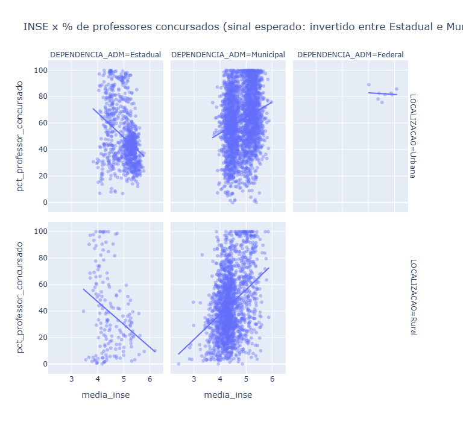
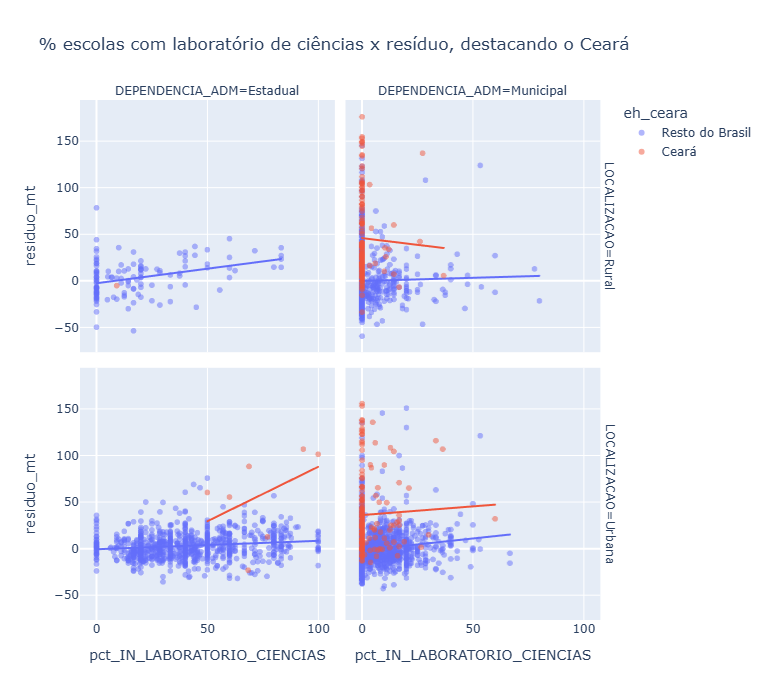
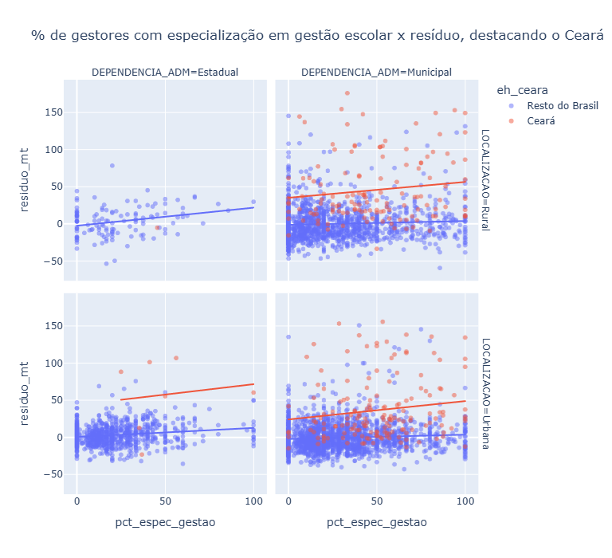

Equidade educacional: triangulando Saeb, Censo Escolar e INSE (2025)
Gestão escolar explica desempenho tanto quanto infraestrutura — e é o único achado que se repete em todo o Brasil
Motivação
Uma primeira etapa desta pesquisa cruzou o Saeb 2025 com o Censo Escolar 2025 pra testar se características do gestor escolar e infraestrutura da escola se associavam com proficiência, usando região como proxy (grosseira) de nível socioeconômico. O achado final foi honesto, mas modesto: só a rede Municipal sustentava alguma associação com rigor estatístico completo, e a limitação mais importante apontada naquele momento era a ausência de uma medida direta de nível socioeconômico.
Antes de simplesmente tapar esse buraco, valeu parar e perguntar: por que focar só no gestor? O interesse original desta pesquisa sempre foi exploratório — descobrir algo, não confirmar uma hipótese fechada de antemão. Com o INSE 2023 (Indicador de Nível Socioeconômico das Escolas, Inep) disponível, fazia mais sentido montar uma triangulação completa das três bases — Saeb, Censo Escolar e INSE — e deixar a pergunta em aberto: dado o nível socioeconômico real de um município/rede, o que mais explica variação em proficiência, e quem foge do que o SES sozinho previa?
Fontes de dados
Três fontes do Inep, com uma pequena defasagem de ano entre elas. Saeb 2025 (saeb_2025_brasil_estados_municipios_censitario.xlsx, aba de Municípios) dá o desfecho — proficiência em Língua Portuguesa e Matemática, por município x dependência administrativa x localização. Censo Escolar 2025, microdados censitários de nível de escola, com cinco tabelas usadas nesta etapa: Tabela_Escola (infraestrutura pedagógica e conectividade), Tabela_Gestor_Escolar (perfil do gestor), Tabela_Docente (formação e vínculo do professor), Tabela_Turma e Tabela_Matricula (tamanho de turma, razão aluno/professor, tempo integral). INSE 2023 (INSE_ESC_2023), o indicador socioeconômico do Inep calculado a partir dos questionários do próprio Saeb, em nível de escola — a única das três bases que não é de 2025 (mais sobre isso nas limitações).
Metodologia
Granularidade, agregação e triangulação
Toda a base foi montada na granularidade de município x dependência administrativa x localização, a mesma do Saeb — cada fonte nova entrou fazendo o mesmo percurso: carregar a Tabela_Escola pra ter a chave CO_ENTIDADE → dependência/localização de cada escola ativa, juntar a fonte de interesse por CO_ENTIDADE, agregar por soma (nunca por média de percentual) até a granularidade final. O INSE, por ser em nível de escola com identificador próprio (ID_ESCOLA), entrou via esse mesmo CO_ENTIDADE e foi agregado como média ponderada por QTD_ALUNOS_INSE (escola com mais alunos respondentes pesa mais).
Como sempre nesta pesquisa: correlação sempre estratificada por dependência x localização, nunca no pool geral (rede e localização são confundidores fortes demais); nunca fazer média de percentuais por escola quando a variável de origem é uma contagem — soma primeiro, percentual depois; um limiar mínimo de 5 escolas por célula antes de qualquer correlação (mantendo a rede Municipal e Estadual como as únicas com poder estatístico razoável; Federal e Privada ficam de fora).
O que a checagem de consistência revelou dessa vez
Nem toda escola tem INSE calculado — precisa de um mínimo de alunos respondentes do questionário do Saeb, então o indicador cobre cerca de 38,6% das escolas ativas (as que participam do Saeb; educação infantil e afins ficam de fora naturalmente, o que não é problema porque essas escolas também não têm proficiência pra cruzar).
Na Tabela_Docente, as categorias de escolaridade (fundamental/médio/superior) somam certinho com o total — mas dentro de “superior”, as subcategorias de pós-graduação (especialização/mestrado/doutorado/nenhuma) não são mutuamente exclusivas: um docente com mestrado normalmente também é contado em especialização, e a soma das quatro chegava a ultrapassar o total em 27.138 de 178.772 linhas (nunca ficava abaixo). A conta certa de “tem alguma pós-graduação” não é somar as três categorias — é graduados - nenhuma pós, que não depende de contar ninguém duas vezes. Vínculo empregatício (concursado/contrato/terceirizado/CLT) tem um problema diferente: as quatro categorias juntas cobrem só cerca de 68% dos docentes — sobra quase um terço numa categoria não capturada pelo Censo nesse recorte, então “% concursado” deve ser lido como piso, não como o quadro completo.
Um limiar mínimo de 3 professores no denominador foi necessário antes de calcular razão aluno/professor (célula com 1-2 professores contados gerava razões acima de 400 alunos por professor — impossível). Mesmo com esse limiar, a razão aluno/professor por disciplina (Matemática e Língua Portuguesa) mostrou um valor implausível especificamente pro Ceará (menos de 1 aluno por professor) — ficou sinalizado como bug de dado a investigar, não usado nas conclusões.
Percurso analítico
A investigação seguiu por camadas, cada uma puxando um fio que a anterior abriu — sem hipótese fechada de largada, do jeito que o interesse original pedia.
Uma primeira “paisagem geral” comparou o INSE e os indicadores novos (formação/vínculo docente, tamanho de turma) contra proficiência e contra o próprio INSE (pra ver se os recursos já eram distribuídos desigualmente por nível socioeconômico). Isso revelou o quanto o INSE domina — muito mais do que região jamais tinha conseguido capturar — e um sinal invertido intrigante: pct_professor_concursado correlaciona negativo com proficiência e com INSE na rede Estadual, mas positivo na Municipal. Testei se o tamanho da rede (n_escolas, como proxy de capacidade administrativa) explicava isso — não explicou (correlação fraca e inconsistente); o enigma ficou registrado, não resolvido.
Em seguida, ajustei uma regressão simples proficiência ~ INSE por estrato (WLS, ponderado por número de escolas) e calculei o resíduo de cada município/rede — quem tira nota melhor ou pior do que o nível socioeconômico sozinho previa. Foi aí que o achado mais forte da pesquisa toda apareceu.
Achados finais
O achado central desta etapa: especialização em gestão do gestor escolar é o único indicador — entre infraestrutura, formação/vínculo docente, tamanho de turma e tempo integral — que se sustenta de forma consistente nos quatro estratos de rede e localização do país inteiro. Os achados abaixo seguem a ordem em que a investigação avançou, terminando exatamente nesse ponto.
O INSE domina, de fato — muito mais do que a proxy de região. Correlação com proficiência varia de r=0,71 (Estadual Rural) a r=0,21-0,28 (Municipal), e o modelo simples proficiência ~ INSE explica 44,6% da variação em Estadual Rural, mas só 9-10% em Municipal. Isso significa que sobra muito mais espaço pra outros fatores explicarem o resultado justamente na rede Municipal — e é lá que a desigualdade na distribuição de formação docente por SES também é mais forte (pct_professor_pos_graduacao chega a correlacionar 0,53 com INSE em Municipal, contra quase zero em Estadual): a rede estadual distribui formação docente de forma mais uniforme pelo território; a municipal, não.
Quem foge do previsto pelo INSE conta uma história geográfica nítida. Nos municípios que mais superam o esperado, o Ceará domina as listas em Estadual Urbana, Municipal Rural e Municipal Urbana — mas não aparece nenhuma vez em Estadual Rural, o que já avisa que o fenômeno não é uniforme dentro do próprio estado. No outro extremo, quem mais fica abaixo do esperado na rede Estadual Urbana é dominado pela Baixada Fluminense (Queimados, Mesquita, Belford Roxo, Nova Iguaçu, Nilópolis, São João de Meriti).

Tempo integral explica parte do Ceará — mas não a parte mais dramática. Puxando esse fio (e adicionando razão aluno/professor e % de tempo integral à base, motivados diretamente por essa descoberta), o Ceará tem 69,9%/79,3% de matrícula em tempo integral nos anos finais na rede Municipal (Rural/Urbana) contra 29,0%/24,0% do resto do Brasil, com INSE igual ou menor — bate com o resíduo. Mas na rede Estadual Urbana, onde estão os resíduos mais extremos (Sobral +101, Juazeiro do Norte +107, Maracanaú +88), o Ceará tem menos tempo integral que o resto do país (3,1% x 23,1%). Tempo integral não é o mecanismo ali. Achado paralelo interessante: nacionalmente, tempo integral correlaciona negativamente com INSE na rede Municipal (r=-0,20 a -0,46) — ao contrário da formação docente, é um recurso distribuído de forma progressiva, mais presente onde o SES é mais baixo, e mesmo assim associado a resultado melhor.
O que de fato distingue o Ceará na rede Estadual Urbana (varredura sistemática por diferença padronizada, 25 municípios cearenses contra o resto do país): infraestrutura muito mais presente em quase todo indicador — laboratório de ciências (83,8% x 41,5%), laboratório de informática (96,0% x 71,8%), biblioteca (92,3% x 68,5%), acessibilidade, banda larga, internet — e especialização em gestão do gestor mais que o dobro (48,7% x 21,8%). Chama atenção também que praticamente nenhum gestor cearense chegou ao cargo por concurso, eleição ou indicação (0,75%/0,02%/0,30%, contra 7,6%/22,3%/14,3% do resto do país) — o que tem explicação fora do Censo Escolar: na rede estadual do Ceará, diretores e coordenadores pedagógicos são selecionados por meio de um Banco de Gestores Escolares, via seleção pública com prova e análise de títulos/certificação em gestão, regulamentado pela Seduc-CE (cev.uece.br). É coerente com a maior especialização em gestão encontrada ali — o próprio processo de seleção parece filtrar por isso. E, de forma contraintuitiva mas coerente com o enigma nacional do vínculo: professor com licenciatura é menor no Ceará (87,4% x 93,3%) e professor concursado bem menor (26,4% x 49,5%).

Testando se isso generaliza além do Ceará: infraestrutura concentra seu efeito na rede Estadual; gestão é o achado mais universal de toda a pesquisa. Correlacionando os indicadores de infraestrutura e especialização em gestão com o resíduo, em todos os estratos (não só olhando o Ceará): infraestrutura (laboratório de informática, acesso a internet, internet pros alunos) chega a r=0,47-0,49 em Estadual Rural — onde o Ceará nem aparece, o que confirma que não é um artefato de um único estado — mas cai pra fraco (0,03-0,13) em Municipal. Já pct_espec_gestao e pct_pos_graduacao do gestor são os únicos indicadores que se sustentam de forma consistente nos quatro estratos (r entre 0,17 e 0,37 em todos), o achado mais generalizável de toda essa investigação — e que fecha o ciclo com a pergunta original da pesquisa sobre perfil do gestor, agora sustentada com controle de nível socioeconômico real (INSE), não a proxy de região usada na etapa anterior.

Replicando com Língua Portuguesa: o achado não é específico de Matemática. Toda a análise de resíduo acima usou MEDIA_9_MT como desfecho — uma escolha herdada da primeira etapa da pesquisa, não testada contra alternativas até este ponto. Repetindo o mesmo percurso (WLS por estrato, resíduo, correlação com os indicadores de destaque) com MEDIA_9_LP: pct_espec_gestao e pct_pos_graduacao continuam significativos e consistentes nos quatro estratos (r entre 0,17 e 0,36, praticamente a mesma faixa de Matemática), e o padrão de infraestrutura repete a mesma assimetria (forte em Estadual, fraco em Municipal). Até o padrão geográfico do Ceará se repete quase igual — domina o topo do resíduo em Estadual Urbana, Municipal Rural e Municipal Urbana, ausente em Estadual Rural. O achado da gestão atravessa disciplina, não é um artefato de Matemática.
Limitações
O INSE é de 2023, enquanto Saeb e Censo Escolar são de 2025 — uma defasagem de dois anos em que composição de rede, matrícula e perfil socioeconômico podem ter mudado, especialmente em municípios pequenos.
A razão aluno/professor por disciplina (Matemática e Língua Portuguesa) tem um problema de dado ainda não investigado, com valores implausíveis especificamente no Ceará — não foi usada nas conclusões, mas fica registrado como pendência.
Vínculo docente tem cerca de um terço dos casos numa categoria não capturada pelas quatro oficiais do Censo (concursado/contrato/terceirizado/CLT) — “% concursado” é piso, não o quadro completo.
Toda a análise continua ecológica (município/rede, não aluno ou escola individual) e correlacional — mesmo controlando por INSE, não há como estabelecer causalidade, nem descartar viés de variável omitida (governança municipal, política pedagógica específica, continuidade de gestão, nenhuma dessas capturada pelas três bases usadas). Federal e Privada ficaram de fora por amostra insuficiente na granularidade usada.
Próximos passos possíveis
Investigar o bug de razão aluno/professor por disciplina antes de confiar nesse indicador. Testar se os achados se repetem em outras etapas (5º ano, Ensino Médio) — a análise usou o 9º ano como desfecho principal, já replicado entre Matemática e Língua Portuguesa, mas não entre etapas. Revisitar o enigma do vínculo docente (concursado) com algum dado de rotatividade ou capacidade fiscal municipal, se uma fonte adequada aparecer. Verificar se outras redes estaduais com processos de seleção técnica de gestores parecidos com o do Ceará (banco de gestores, seleção pública) também aparecem entre as que mais superam o previsto pelo INSE — testaria diretamente se o mecanismo institucional generaliza.